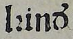
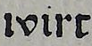

Ersetzungen
Im Allgemeinen bedeutet (die Erstellung von) Ground Truth, das alles auf der gedruckten Seite in gleicher Art und Weise wiedergegeben wird. Ersetzungen oder Normalisierungen widersprechen diesem Prinzip. Aber diesem Prinzip kann in der Realität nicht immer gefolgt werden. Im Folgenden werden einige Beispiele wiedergegeben.
Beim Level eins, ist der Interpretationsspielraum unbegrenzt. Somit sind sehr weitreichende Normalisierungen oder Ersetzungen möglich. Im Unterschied zu den Leveln zwei und drei, übertragen diese den Text vorlagengetreuer.
| Vorlage | Level 1 | Level 2 | Level 3 |
|---|---|---|---|
|  | kinder oder kinď | lꝛinď | lꝛinď |
|  | wird oder wirt | ıvirt | ıvirt |